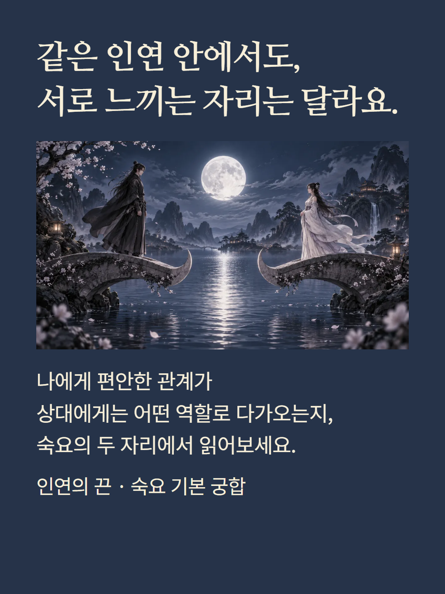
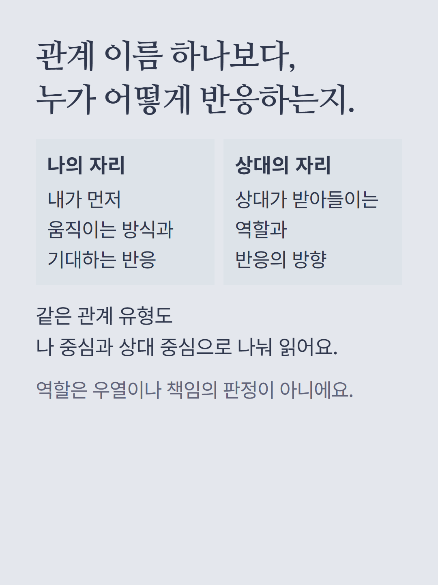
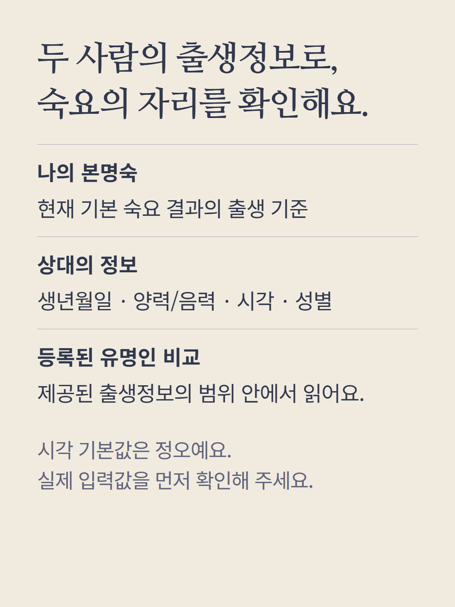
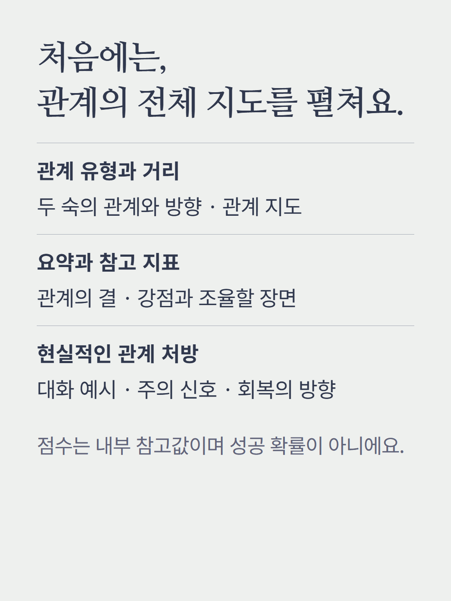
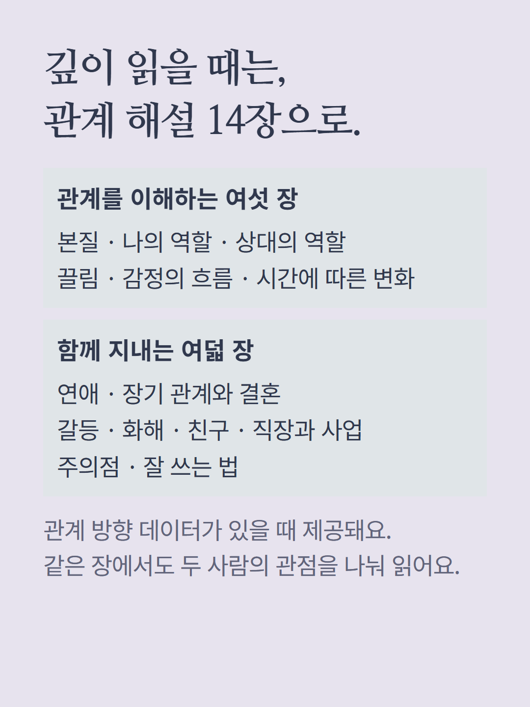
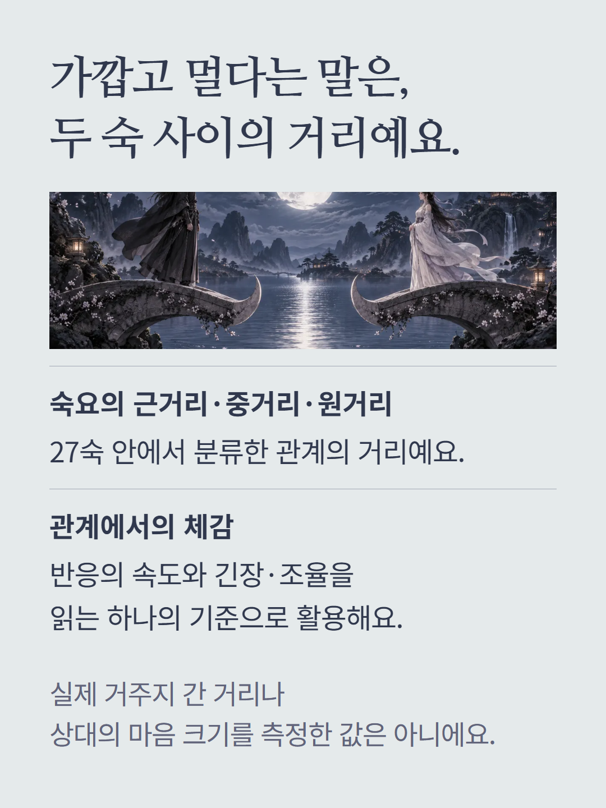
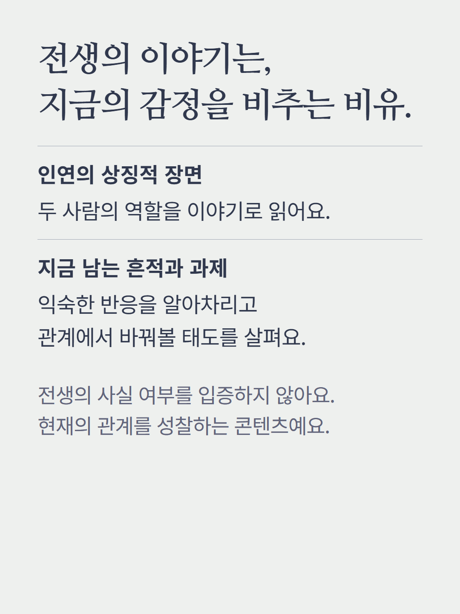
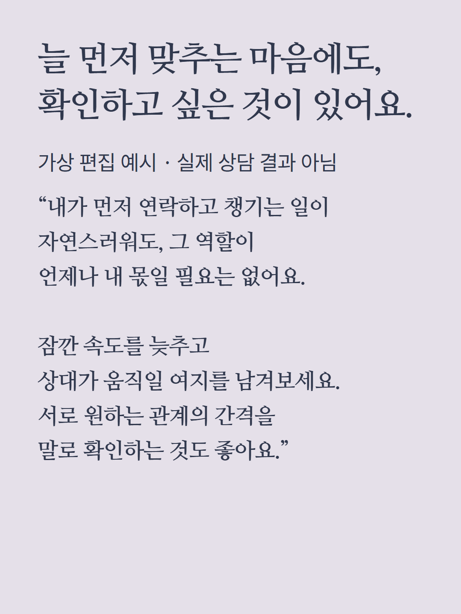
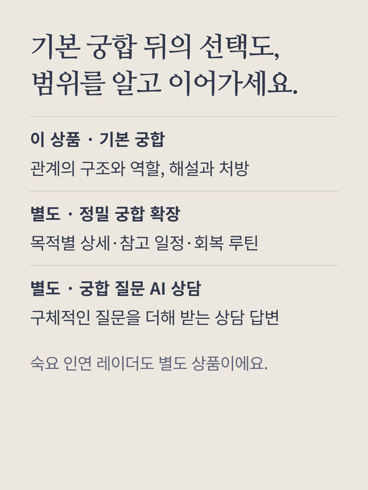
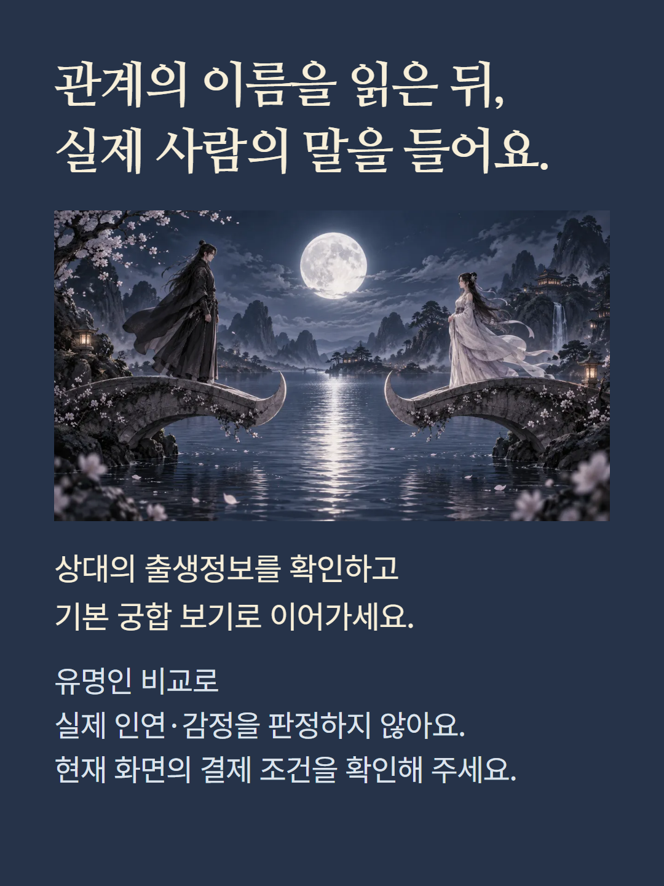

기본 숙요 결과의 본명숙과 상대의 생년월일·양력/음력·시각·성별로 두 사람의 숙요 관계를 비교합니다. 시각의 기본값은 정오입니다. 관계 유형·거리·나와 상대의 역할, 관계 지도, 지표와 종합 해석, 대화 처방·주의 신호·회복 방향을 읽습니다. 관계 방향 데이터가 있을 때 관계 해설 14장과 전생의 상징적 이야기가 제공됩니다. 점수는 내부 참고값이며 성공 확률이 아닙니다. 근거리·중거리·원거리는 숙요에서 두 숙 사이를 분류한 거리이고 실제 거주지 간 거리가 아닙니다. 유명인 정보도 등록된 출생정보 범위 안의 비교이며 실제 감정이나 관계를 뜻하지 않습니다. 정밀 궁합 확장, 궁합 질문 AI 상담, 숙요 인연 레이더는 별도 상품입니다. 예시는 가상 편집이며 현재 화면의 결제 조건을 따릅니다.